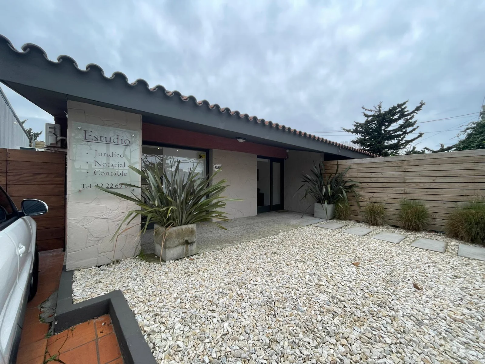

Necesitas ordenar una consulta legal o notarial?
Contá el motivo y coordiná el canal más adecuado.
Llamanos ahora099 385 888 Consultar ahoraPráctica jurídica y notarial
Consultas, representación, tramites legales y servicios notariales desde Maldonado Centro.
Orientación para entender opciones y documentación necesaria.
Acompañamiento profesional para gestionar el asunto.
Gestiones y documentación dentro del área notarial.
Organizacion de pasos, requisitos y seguimiento.
Atención de situaciones privadas que requieren criterio legal.
Comunicación para avanzar con mayor orden y claridad.

Contá el motivo y coordiná el canal más adecuado.
Llamanos ahora099 385 888 Consultar ahoraSituaciones concretas
El primer paso es explicar el asunto. El estudio puede orientar si corresponde un tramite, una gestión notarial o representación legal.
Podés escribir por WhatsApp o llamar al estudio.
Contar mi situacionSobre nosotros
Tellechea Valladarez & Asociados concentra práctica jurídica y notarial para que cada consulta se aborde con documentación, criterio y pasos claros desde el inicio.
Conoce como trabajamosAsesoramiento y representación para asuntos legales.
Gestiones documentales dentro del área notarial.
Proceso claro para pasar de la consulta a los próximos pasos.
Equipo del estudio
La atención se organiza entre área jurídica y área notarial para responder consultas, gestiones y documentación con mayor orden.
Te acompanamos paso a paso con un enfoque claro y profesional.
Escuchamos tu situacion para conocer el punto de partida.
Identificamos la documentacion y las opciones disponibles.
Te explicamos con claridad los proximos pasos posibles.
Avanzamos manteniendo una comunicacion responsable.
Datos del estudio
Preguntas frecuentes
Informacion practica para dar el primer paso con mayor claridad.
Tenes otra pregunta? LlamanosSi. La información pública confirma actividad jurídica y notarial.
Asesoramiento, representación, tramites y consultas legales, ademas de servicios notariales.
En la calle 3 de Febrero, Maldonado Centro.
Podés escribir por WhatsApp o llamar al 099 385 888.
No. Podés explicar la situación y el estudio orientara el área correspondiente.
No. Es información general para facilitar el contacto inicial.
Ubicacion
Un punto de atencion para coordinar tu consulta y acercar la documentacion necesaria.